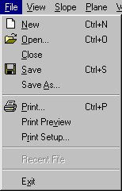
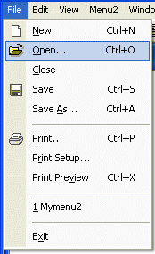

| Cool Owner Drawn Menus with
Bitmaps Version 3.034 May 2002 By Brent Corkum
Update
Information
|
 |  |
As you can see I've added the new Office XP drawing style for the menu's. I just got a machine with Windows XP on it and I noticed that the menu's in all our applications looked terrible. So I decided to do something about it and after 2 years of not looking at the class, added the new menu drawing style, and added lot's of fixes and user requests. Now the new drawing style isn't exactly like Microsoft's, but I got it so it looks good enough to me. For people that use the old class it's a simple matter of taking exchanging the old BCMenu .cpp and .h files with the new ones.
The class currently uses the new style on XP and the old style on Win9x/NT and 2000. However, if you like the new style and you want to use it on all Windows platforms, just change the following line at the top of the BCMenu.cpp file from:
UINT
BCMenu::original_drawmode=BCMENU_DRAWMODE_ORIGINAL;to
UINT
BCMenu::original_drawmode=BCMENU_DRAWMODE_XP;Likewise, if you think I did a terrible job you can change the drawing style to the original one on all the platforms.
Other additions include support for images with greater than 16 colors. The example contains images with both 256 and 16 million colors. There is also an option for how to draw disabled options. In XP mode they are not selected but this can be changed. I also fixed the problem with multiple menu items with the same command ID not getting images (only the first one did!). I also went through most of the articles on codeguru and codeproject and fixed a number of bugs that people pointed out. See the update page for more information.
Installation (MDI Application)
HMENU NewMenu();HMENU NewDefaultMenu();
BCMenu m_menu,m_default;
#include "BCMenu.h"
to the top of the MainFrm.h header file.
HMENU CMainFrame::NewMenu(){ static UINT toolbars[]={ IDR_MAINFRAME };// Load the menu from the resources
m_menu.LoadMenu(IDR_MYMENUTYPE); // ****replace IDR_MENUTYPE with your menu ID**** // Use ModifyODMenu to add a bitmap to a menu options.The first parameter // is the menu option text string.If it's NULL, keep the current text // string.The second option is the ID of the menu option, or the menu // option text (can use this for adding bitmaps to popup options) to change. // The third option is the resource ID of the bitmap.This can also be a // toolbar ID in which case the class searches the toolbar for the // appropriate bitmap.Only Bitmap and Toolbar resources are supported. // m_menu.ModifyODMenu(NULL,ID_WINDOW_NEW,IDB_WINDOW_NEW); // m_menu.ModifyODMenu(NULL, "&Tile",IDB_WINDOW_TILE); // Another method for adding bitmaps to menu options is through the // LoadToolbars member function.This method allows you to add all // the bitmaps in a toolbar object to menu options (if they exist). // The first function parameter is an array of toolbar id's. // The second is the number of toolbar id's. There is also a // function called LoadToolbar that just takes an id. m_menu.LoadToolbars(toolbars,1); return(m_menu.Detach());} HMENU CMainFrame::NewDefaultMenu(){m_default.LoadMenu(IDR_MAINFRAME);
m_default.LoadToolbar(IDR_MAINFRAME);
return(m_default.Detach());}
// create main MDI Frame window
CMainFrame* pMainFrame = new CMainFrame;if (!pMainFrame->LoadFrame(IDR_MAINFRAME))
return FALSE;m_pMainWnd = pMainFrame;
// This code replaces the MFC created menus with the Ownerdrawn versions
pDocTemplate->m_hMenuShared=pMainFrame->NewMenu();pMainFrame->m_hMenuDefault=pMainFrame->NewDefaultMenu(); // This simulates a window being opened if you don't have
// a default window displayed at startup
pMainFrame->OnUpdateFrameMenu(pMainFrame->m_hMenuDefault); // Parse command line for standard shell commands, DDE, file open
CCommandLineInfo cmdInfo;
ParseCommandLine(cmdInfo);
//This handler ensure that the popup menu items are drawn correctly
void CMainFrame::OnMeasureItem(int nIDCtl, LPMEASUREITEMSTRUCT lpMeasureItemStruct) { BOOL setflag=FALSE; if(lpMeasureItemStruct->CtlType==ODT_MENU){ if(IsMenu((HMENU)lpMeasureItemStruct->itemID)){ CMenu* cmenu=CMenu::FromHandle((HMENU)lpMeasureItemStruct->itemID); if(BCMenu::IsMenu(cmenu)){ m_menu.MeasureItem(lpMeasureItemStruct); setflag=TRUE; } } } if(!setflag)CMDIFrameWnd::OnMeasureItem(nIDCtl, lpMeasureItemStruct);}//This handler ensures that keyboard shortcuts work
LRESULT CMainFrame::OnMenuChar(UINT nChar, UINT nFlags, CMenu* pMenu) { LRESULT lresult; if(BCMenu::IsMenu(pMenu)) lresult=BCMenu::FindKeyboardShortcut(nChar, nFlags, pMenu); else lresult=CMDIFrameWnd::OnMenuChar(nChar, nFlags, pMenu); return(lresult);} //This handler updates the menus from time to time
void CMainFrame::OnInitMenuPopup(CMenu* pPopupMenu, UINT nIndex, BOOL bSysMenu) { CMDIFrameWnd::OnInitMenuPopup(pPopupMenu, nIndex, bSysMenu); if(!bSysMenu){ if(BCMenu::IsMenu(pPopupMenu))BCMenu::UpdateMenu(pPopupMenu); }}
HMENU NewMenu();
BCMenu m_menu;
#include "BCMenu.h"
to the top of the
MainFrm.h header file.
HMENU CMainFrame::NewMenu(){ // Load the menu from the resources m_menu.LoadMenu(IDR_MAINFRAME); // ****replace IDR_MAINFRAME with your menu ID**** // Use ModifyODMenu to add a bitmap to a menu options.The first parameter // is the menu option text string.If it's NULL, keep the current text // string.The second option is the ID of the menu option to change. // The third option is the resource ID of the bitmap.This can also be a // toolbar ID in which case the class searches the toolbar for the // appropriate bitmap.Only Bitmap and Toolbar resources are supported. // m_menu.ModifyODMenu(NULL,ID_ZOOM,IDB_ZOOM); // Another method for adding bitmaps to menu options is through the // LoadToolbar member function.This method allows you to add all // the bitmaps in a toolbar object to menu options (if they exist). // The function parameter is an the toolbar id. // There is also a function called LoadToolbars that takes an // array of id's. m_menu.LoadToolbar(IDR_MAINFRAME); return(m_menu.Detach());}
// Dispatch commands specified on the command line
if (!ProcessShellCommand(cmdInfo))
return FALSE; CMenu* pMenu = m_pMainWnd->GetMenu(); if (pMenu)pMenu->DestroyMenu(); HMENU hMenu = ((CMainFrame*) m_pMainWnd)->NewMenu(); pMenu = CMenu::FromHandle( hMenu ); m_pMainWnd->SetMenu(pMenu); ((CMainFrame*)m_pMainWnd)->m_hMenuDefault = hMenu;
//This handler ensure that the popup menu items are drawn correctly
void CMainFrame::OnMeasureItem(int nIDCtl, LPMEASUREITEMSTRUCT lpMeasureItemStruct) { BOOL setflag=FALSE; if(lpMeasureItemStruct->CtlType==ODT_MENU){ if(IsMenu((HMENU)lpMeasureItemStruct->itemID)){ CMenu* cmenu=CMenu::FromHandle((HMENU)lpMeasureItemStruct->itemID); if(BCMenu::IsMenu(cmenu)){ m_menu.MeasureItem(lpMeasureItemStruct); setflag=TRUE; } } } if(!setflag)CFrameWnd::OnMeasureItem(nIDCtl, lpMeasureItemStruct);}//This handler ensures that keyboard shortcuts work
LRESULT CMainFrame::OnMenuChar(UINT nChar, UINT nFlags, CMenu* pMenu) { LRESULT lresult; if(BCMenu::IsMenu(pMenu)) lresult=BCMenu::FindKeyboardShortcut(nChar, nFlags, pMenu); else lresult=CFrameWnd::OnMenuChar(nChar, nFlags, pMenu); return(lresult);} //This handler updates the menus from time to time
void CMainFrame::OnInitMenuPopup(CMenu* pPopupMenu, UINT nIndex, BOOL bSysMenu) { CFrameWnd::OnInitMenuPopup(pPopupMenu, nIndex, bSysMenu); if(!bSysMenu){ if(BCMenu::IsMenu(pPopupMenu))BCMenu::UpdateMenu(pPopupMenu); }}